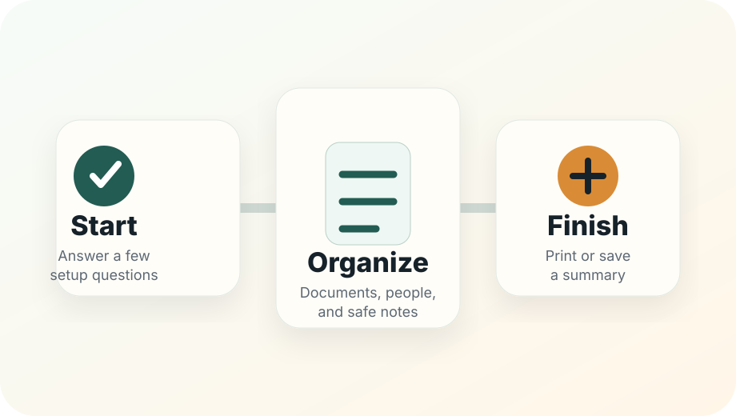

Start
Answer simple setup questions. This helps the site point you to the safest first task.
Start Step 1Simple overview
This page explains the path. When you are ready, start Step 1 and the site will guide you forward.

Your next click
Answer a few simple questions so the site can point you to the right first task.
0 of 6 core steps done
Answer simple setup questions. This helps the site point you to the safest first task.
Start Step 1Use the main checklist, document locator, and beneficiary review. Keep entries general.
Build a clean planning summary, run the final review, then print or save only what you need.
Write labels and locations: “life insurance folder,” “safe in bedroom closet,” “ask attorney about backup executor.”
Do not type passwords, SSNs, full account numbers, safe codes, private keys, seed phrases, or confidential legal facts.
You can stop after any step and come back later. Progress is saved only in this browser.
Skip the question, print the quick-start guide, or write a question to ask a qualified professional. Skipping is safer than guessing.